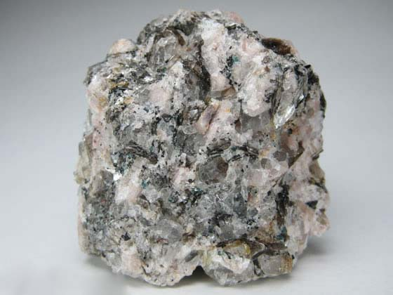
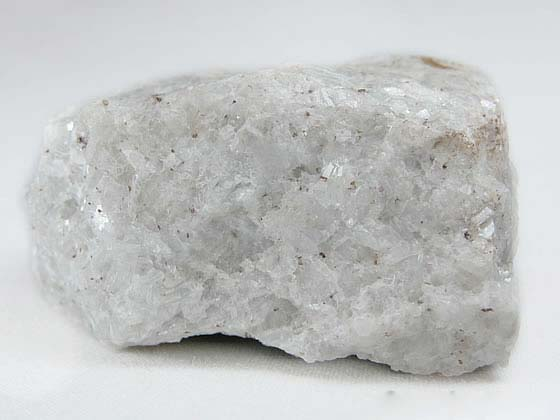

What is a Rock?
Rocks are everywhere. They have been on the earth over four billion years. Rocks is a solid material, it naturally occurs, and is made up of minerals or mineral like matter. Some rocks are composed of just one mineral. Pyrite and quartz are two common rocks that fit this category. Most rocks are a solid mixture of several minerals like granite. Rocks are a fascinating way to discover information about the history of the earth. Most rocks are made of minerals. However, all rocks are not the same. Rocks are classified by how they are formed. There are three basic groups: igneous, sedimentary, and metamorphic. How a rock is formed determines which group it is placed in.
Igneous Rocks
Igneous rocks are formed from the solidification of molten rock material. There are two basic types: intrusive igneous rocks such as diorite, gabbro, granite and pegmatite that solidify below Earth's surface; and extrusive igneous rocks such as andesite, basalt, obsidian, pumice, rhyolite and scoria that solidify on or above Earth's surface. Igneous rock may form with or without crystallization, either below the surface as intrusive (plutonic) rocks or on the surface as extrusive (volcanic) rocks. This magma can be derived from partial melts of pre-existing rocks in either a planet's mantle or crust. Typically, the melting is caused by one or more of three processes: an increase in temperature, a decrease in pressure, or a change in composition. Over 700 types of igneous rocks have been described, most of them having formed beneath the surface of Earth's crust. Igneous and metamorphic rocks make up 90–95% of the top 16 km of the Earth's crust by volume.
Some Examples:
Pegmatite is a light-colored, extremely coarse-grained intrusive igneous rock. It forms near the margins of a magma chamber during the final phases of magma chamber crystallization. It often contains rare minerals that are not found in other parts of the magma chamber. The specimen shown above is about two inches (five centimeters) across.
Obsidian is a dark-colored volcanic glass that forms from the very rapid cooling of molten rock material. It cools so rapidly that crystals do not form. The specimen shown above is about two inches (five centimeters) across.
Gabbro is a coarse-grained, dark colored, intrusive igneous rock that contains feldspar, augite and sometimes olivine. The specimen shown above is about two inches (five centimeters) across.
Sedimentary Rocks
Sedimentary rocks are formed by the accumulation of sediments. There are three basic types of sedimentary rocks: clastic sedimentary rocks such as breccia, conglomerate, sandstone and shale, that are formed from mechanical weathering debris; and chemical sedimentary rocks such as rock salt and some limestones, that form when dissolved materials precipitate from solution; and, 3) organic sedimentary rocks such as coal and some limestones which form from the accumulation of plant or animal debris. Sedimentary rocks are deposited in layers as strata, forming a structure called bedding. The study of sedimentary rocks and rock strata provides information about the subsurface that is useful for civil engineering, for example in the construction of roads, houses, tunnels, canals or other constructions. Sedimentary rocks are also important sources of natural resources like coal, fossil fuels, drinking water or ores.
Some Examples:
Dolomite (also known as "dolostone" and "dolomite rock") is a chemical sedimentary rock that is very similar to limestone. It is thought to form when limestone or lime mud is modified by magnesium-rich groundwater. The specimen shown above is about four inches (ten centimeters) across.
Breccia is a clastic sedimentary rock that is composed of large (over two millimeter diameter) angular fragments. The spaces between the large fragments can be filled with a matrix of smaller particles or a mineral cement which binds the rock together. The specimen shown above is about two inches (five centimeters) across.
Flint Flint is a hard, tough chemical or biochemical sedimentary rock that breaks with a conchoidal fracture. It is a form of microcrystalline quartz that is typically called “chert” by geologists. It often forms as nodules in sedimentary rocks such as chalk and marine limestones.
Metamorphic Rocks
Metamorphic rocks have been modified by heat, pressure and chemical process usually while buried deep below Earth's surface. Exposure to these extreme conditions has altered the mineralogy, texture and chemical composition of the rocks. There are two basic types of metamorphic rocks: foliated metamorphic rocks such as gneiss, phyllite, schist and slate which have a layered or banded appearance that is produced by exposure to heat and directed pressure; and, non-foliated metamorphic rocks such as marble and quartzite which do not have a layered or banded appearance. They are also formed when rock is heated up by the intrusion of hot molten rock called magma from the Earth's interior. The study of metamorphic rocks (now exposed at the Earth's surface following erosion and uplift) provides information about the temperatures and pressures that occur at great depths within the Earth's crust.
Some Examples:

Slate is a foliated metamorphic rock that is formed through the metamorphism of shale. It is a low grade metamorphic rock that splits into thin pieces. The specimen shown above is about two inches (five centimeters) across.
Schist s metamorphic rock with well developed foliation. It often contains significant amounts of mica which allow the rock to split into thin pieces. It is a rock of intermediate metamorphic grade between phyllite and gneiss. The specimen shown above is a "chlorite schist" because it contains a significant amount of chlorite. It is about two inches (five centimeters) across.
Gneiss is foliated metamorphic rock that has a banded appearance and is made up of granular mineral grains. It typically contains abundant quartz or feldspar minerals. The specimen shown above is about two inches (five centimeters) across.